Untuk mahasiswa yang telah tamat pengajian. Tiga langkah pertama dibuat di Portal Mahasiswa KISDA (telefon atau komputer); langkah terakhir di pejabat fakulti.
Maklumat dalam profil anda akan dicetak pada ijazah. Pastikan semuanya betul sebelum memohon.
Syahadah 3 Tsanawi
Kad pengenalan diri
Muat naik jika ada
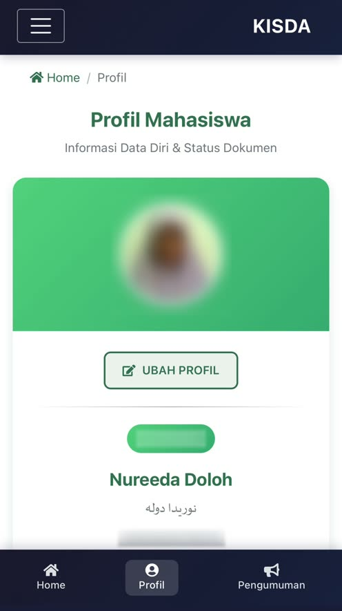
Tekan Profil di bar bawah. Semak nama, tarikh lahir, nombor kad pengenalan dan alamat.
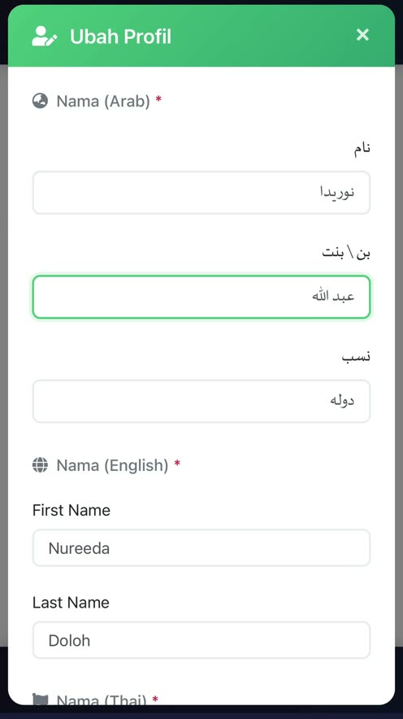
Tekan UBAH PROFIL. Lengkapkan Nama (Arab), Nama (English) dan Nama (Thai) — ketiga-tiganya wajib.
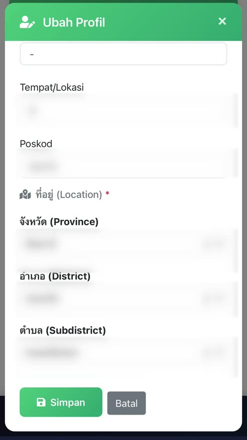
Tatal ke bawah, semak tarikh lahir, telefon dan alamat, kemudian tekan Simpan.
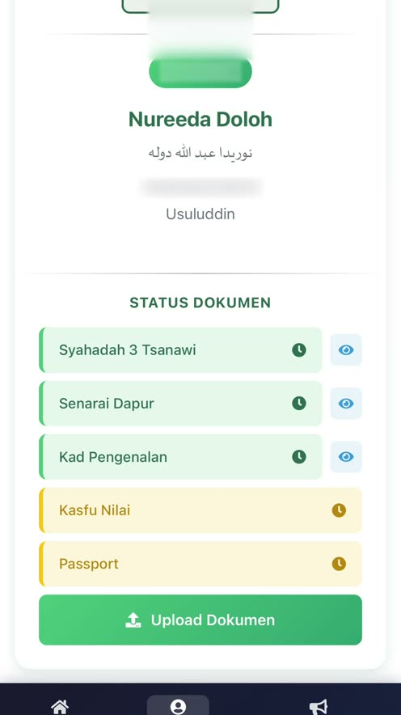
Dokumen yang sudah ada bertanda hijau; yang belum ada bertanda kuning.
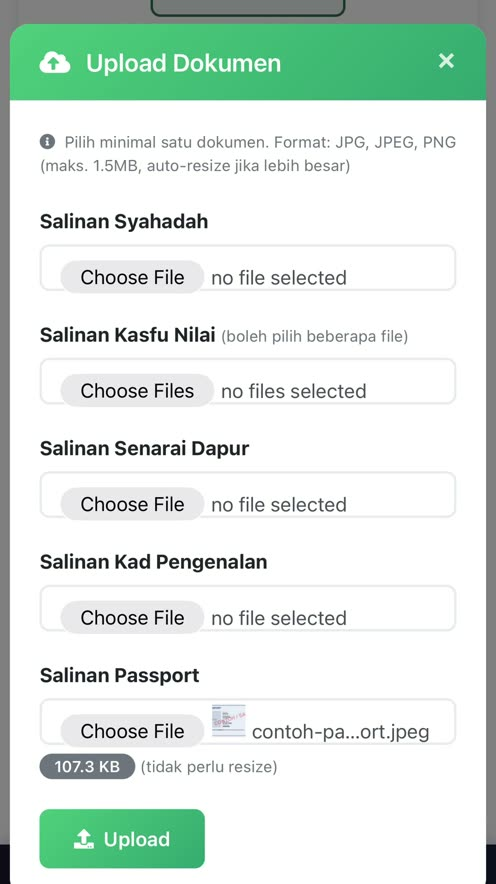
Tekan Upload Dokumen, pilih fail (JPG/PNG, maks. 1.5MB) bagi dokumen yang belum ada, kemudian tekan Upload.
Laluan: Home → Permohonan → Mohon Ijazah.
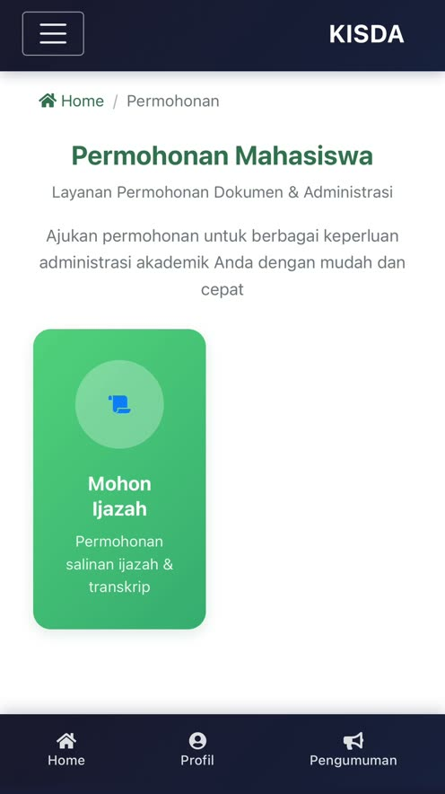
Di halaman utama tekan Permohonan, kemudian kad Mohon Ijazah.
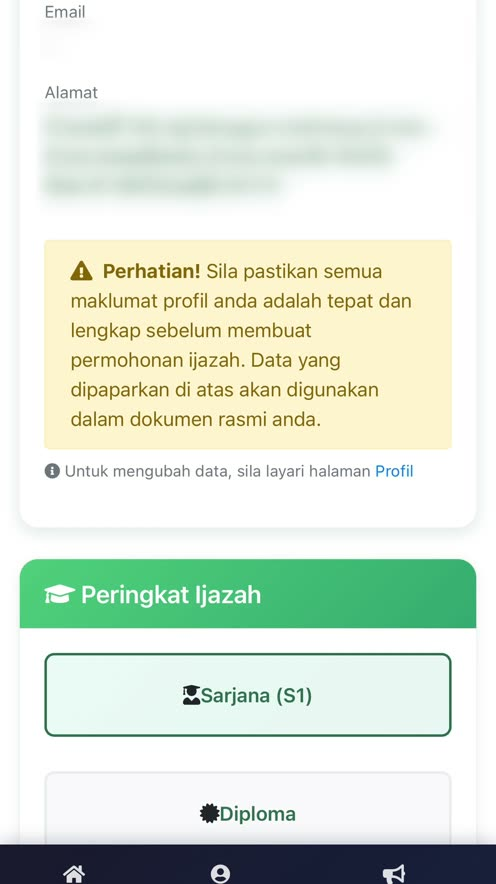
Maklumat diambil terus daripada profil. Jika ada yang salah, tekan Edit di Profil.
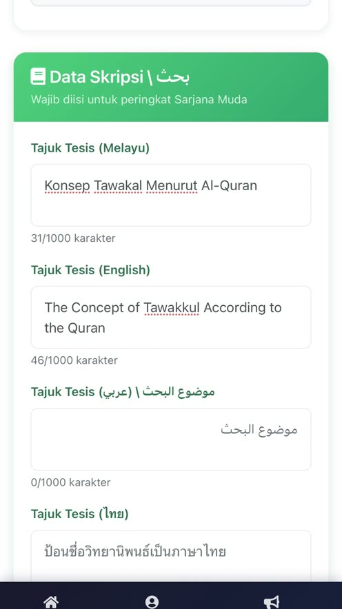
Pilih Sarjana (S1) atau Diploma. Bagi Sarjana, isi tajuk tesis (Melayu, English, Arab, Thai — pilihan).
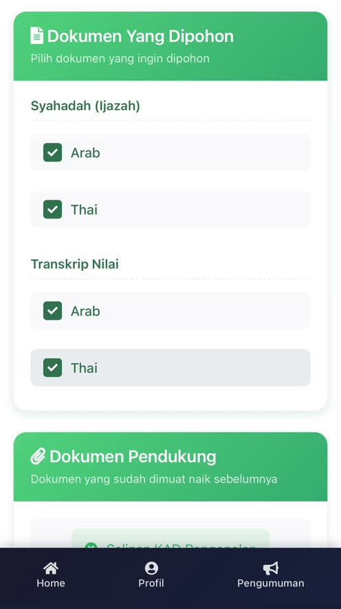
Tandakan Syahadah (Ijazah) dan Transkrip Nilai mengikut bahasa. Bahasa ikut fakulti: Thai + Arab, atau Thai + Melayu.
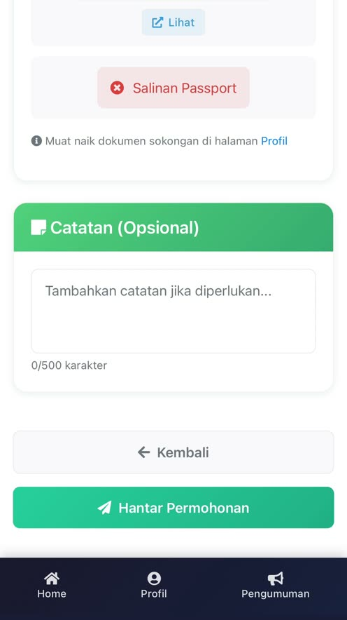
Pastikan Salinan Syahadah dan Salinan Kad Pengenalan bertanda hijau di bahagian Dokumen Pendukung, kemudian tekan Hantar Permohonan.
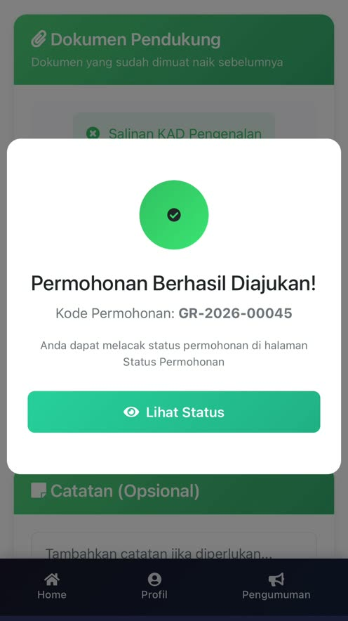
Kod permohonan (contoh GR-2026-00045) dipaparkan. Tekan Lihat Status.
Permohonan disemak oleh beberapa unit mengikut turutan. Setiap langkah yang selesai bertanda hijau.
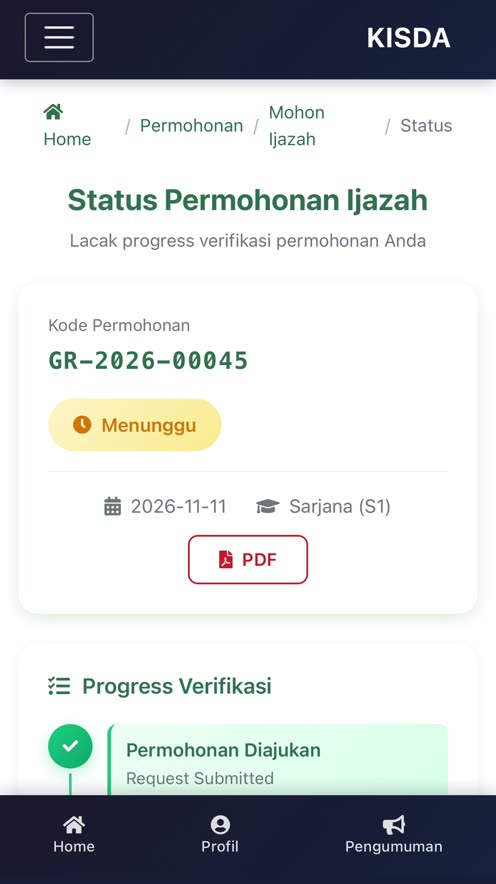
Kod permohonan, status semasa (Menunggu, Diluluskan, Ditolak atau Selesai) dan butang PDF untuk mencetak borang.
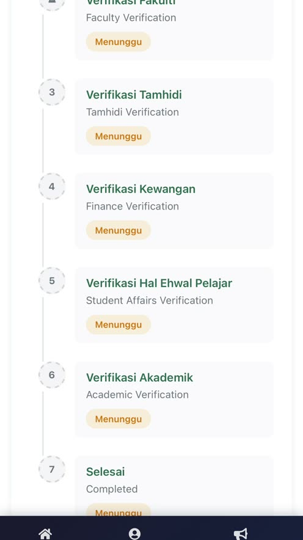
Lihat di unit mana permohonan anda sedang disemak.
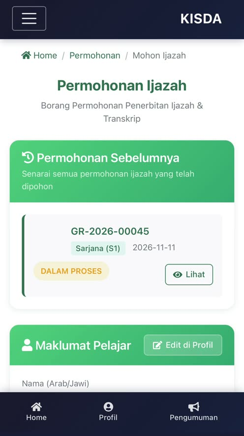
Buka Mohon Ijazah; permohonan anda ada di Permohonan Sebelumnya. Tekan Lihat.
Selepas menghantar permohonan dalam talian, pergi ke pejabat fakulti. Staf fakulti akan mencetak dua borang untuk anda.
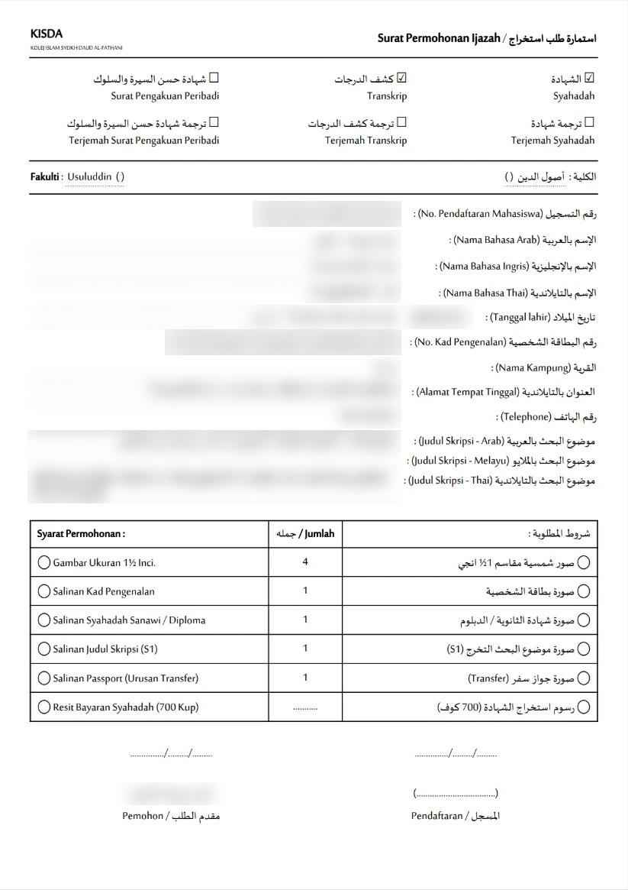
استمارة طلب استخراج — maklumat diri, dokumen yang dipohon dan senarai syarat permohonan.
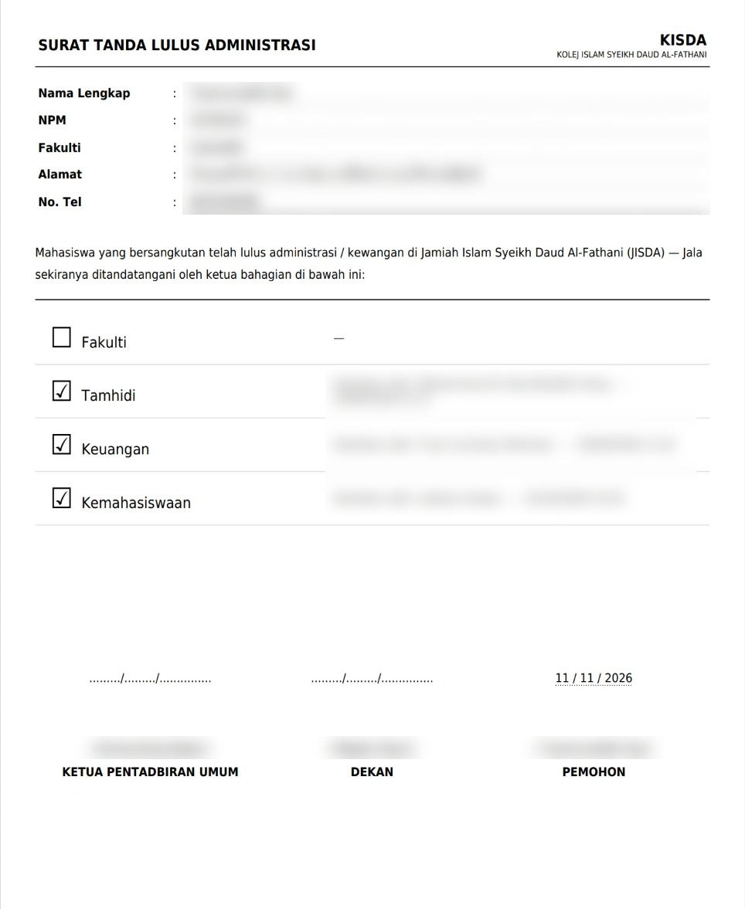
Pengesahan lulus pentadbiran oleh Fakulti, Tamhidi, Keuangan dan Kemahasiswaan.
บัตรประชาชน
ทะเบียนบ้าน
ชั้น 10 / 3 ซานาวี
Ukuran 1½ inci
Staf fakulti. Datang ke pejabat fakulti selepas menghantar permohonan dalam talian; mereka akan mencetak Surat Permohonan Ijazah dan Surat Tanda Lulus Administrasi untuk anda.
Tidak. Salinan Passport hanyalah pilihan. Yang wajib ialah Salinan Syahadah dan Salinan Kad Pengenalan.
Tekan Edit di Profil (atau Profil → UBAH PROFIL), betulkan, dan tekan Simpan sebelum menghantar permohonan. Data ini digunakan dalam dokumen rasmi.
Tidak wajib, tetapi digalakkan bagi peringkat Sarjana (S1) supaya tajuk dicetak dengan betul.
Permohonan ijazah dibuka kepada mahasiswa yang telah lulus semua mata pelajaran yang diperlukan. Hubungi fakulti jika anda yakin telah layak.
Sistem akan mengecilkan gambar secara automatik. Gunakan format JPG, JPEG atau PNG.